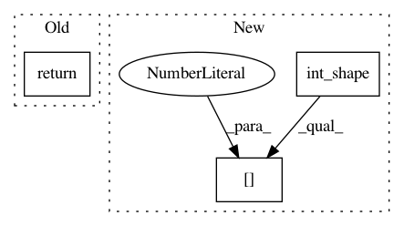

1b11b4eeb6bd4b163ce351af680c5a14d823443d,keras/backend/tensorflow_backend.py,,resize_images,#Any#Any#Any#Any#,494
Before Change
new_shape *= tf.constant(np.array([height_factor, width_factor]).astype("int32"))
X = permute_dimensions(X, [0, 2, 3, 1])
X = tf.image.resize_nearest_neighbor(X, new_shape)
return permute_dimensions(X, [0, 3, 1, 2])
elif dim_ordering == "tf":
new_shape = tf.shape(X)[1:3]
new_shape *= tf.constant(np.array([height_factor, width_factor]).astype("int32"))
return tf.image.resize_nearest_neighbor(X, new_shape)
After Change
X.set_shape((None, None, original_shape[2] * height_factor, original_shape[3] * width_factor))
return X
elif dim_ordering == "tf":
original_shape = int_shape(X)
new_shape = tf.shape(X)[1:3]
new_shape *= tf.constant(np.array([height_factor, width_factor]).astype("int32"))
X = tf.image.resize_nearest_neighbor(X, new_shape)
X.set_shape((None, original_shape[1] * height_factor, original_shape[2] * width_factor, None))
return X
else:
raise Exception("Invalid dim_ordering: " + dim_ordering)
In pattern: SUPERPATTERN
Frequency: 3
Non-data size: 3
Instances
Project Name: keras-team/keras
Commit Name: 1b11b4eeb6bd4b163ce351af680c5a14d823443d
Time: 2016-05-11
Author: francois.chollet@gmail.com
File Name: keras/backend/tensorflow_backend.py
Class Name:
Method Name: resize_images
Project Name: keras-team/keras
Commit Name: 65a215646c653ab808170c8b8c10de2945262613
Time: 2017-04-07
Author: myutwo150@users.noreply.github.com
File Name: keras/backend/theano_backend.py
Class Name:
Method Name: in_top_k
Project Name: keras-team/keras
Commit Name: 75bef59016a8a230823a04836e1ab6e5bf0079dc
Time: 2016-04-01
Author: francois.chollet@gmail.com
File Name: keras/backend/tensorflow_backend.py
Class Name:
Method Name: dot